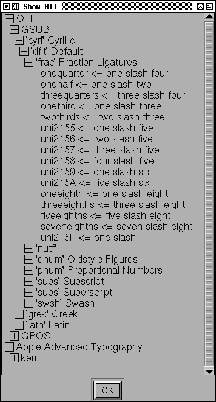

Show Advanced Typographic Features¶
This dialog shows the contents of some advanced typography tables (GDEF, GPOS and GSUB for opentype fonts, kern, lcar, morx, opbd and prop for Apple fonts) as far as fontforge understands them. The dialog is hierarchical with the typical boxed +/- signs used for opening and closing sub-levels.
The GSUB and GPOS tables are organized as one might expect. Underneath each table is a list of scripts, underneath each script is a list of languages, underneath each language is a list of features, underneath each feature is a list of glyphs, generally with some description of what happens (in the example a right the ‘frac’ feature turns 1/4 into ¼). Some features are a little more complex (the ‘kern’ feature has a list of all glyphs that kern with the first glyph under the first glyph).
The morx and kern tables are also broken up into scripts (Apple doesn’t treat scripts at all, but it makes the state machines smaller, so fontforge uses the concept anyway), but languages are omitted (Apple tables will be based on data for the default language).
Pressing the right mouse button will bring up a popup menu which will allow you to save the contents of the dlg (as utf8 text).